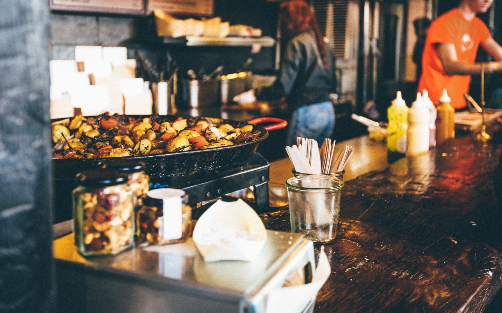
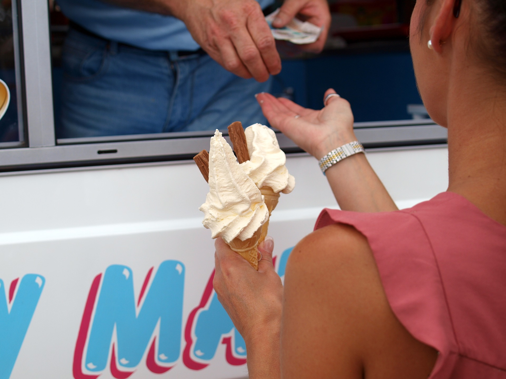
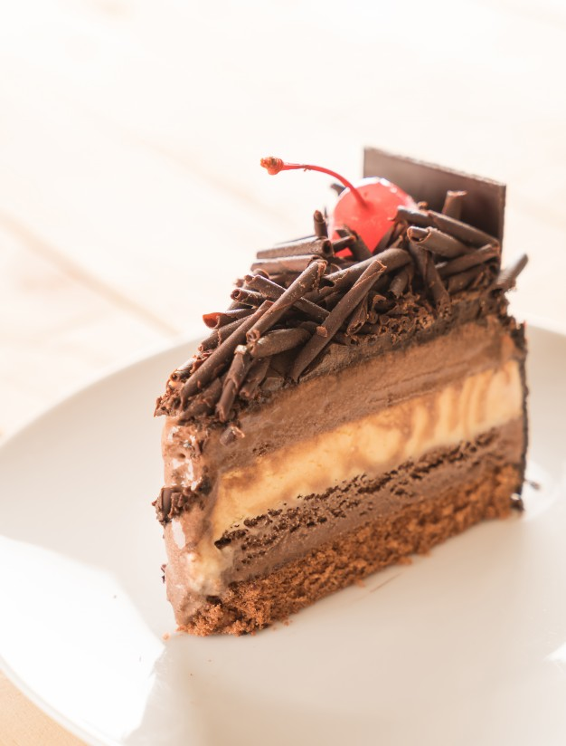

FoodTrucksATX
Temperature
Humidity
About

Travel there?
Click ONE travel option.
Walking
Bicycle
Driving
Public Transit
Thinking about bacon wrapped poppers?
Fun for all
Southern fried chicken maybe?
 Chill with some ice cream!

Austin knows how to make pizza!
How about pastries with coffee?
Breakfast?
What are you hungry for?
Food Type?
Price
$
$$
$$$
Choose at least one option.
Food Category
Submit
send

 Fun for all
Fun for all Austin knows how to make pizza!
Austin knows how to make pizza! Breakfast?
Breakfast?